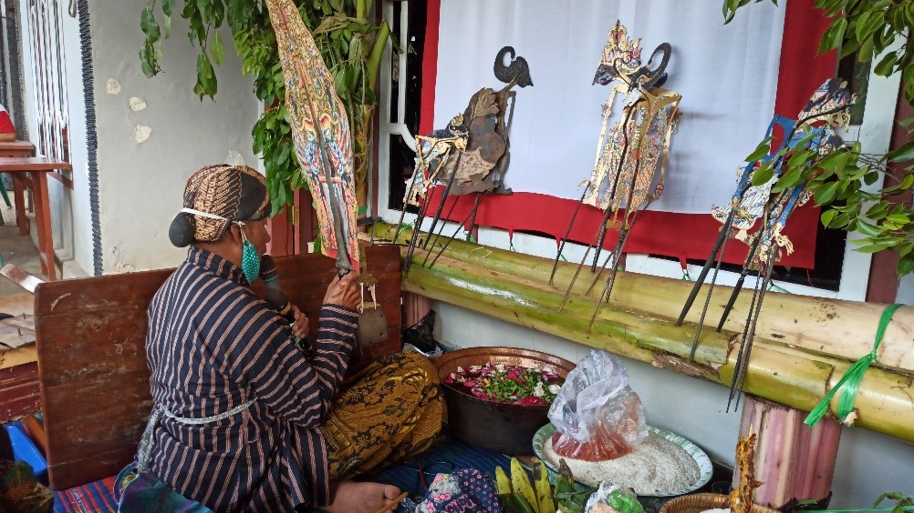
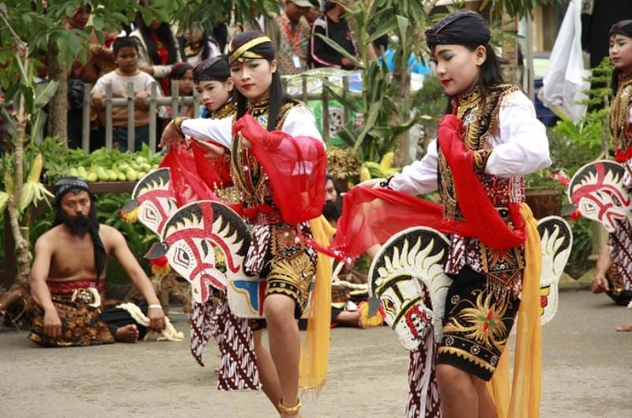
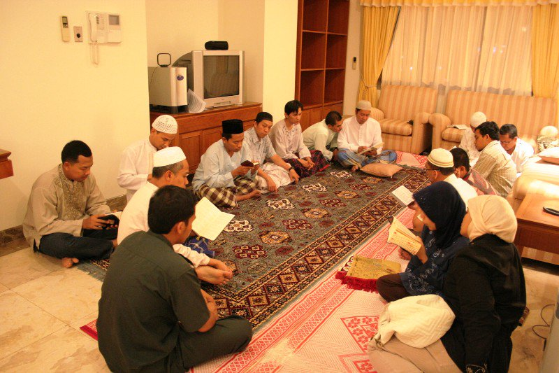

Kesenian dan Budaya

Kesenian Tradisional
Kelurahan Ukui, yang terletak di Kabupaten Pelalawan, Provinsi Riau, bukan hanya dikenal dengan potensi alam dan perkebunannya yang melimpah, tetapi juga kekayaan tradisi dan budayanya. Terletak di jantung Tanah Melayu, Kelurahan Ukui tumbuh menjadi "miniatur Indonesia" yang indah. Akulturasi budaya tumbuh subur di sini, di mana masyarakat dari berbagai latar belakang hidup berdampingan secara harmonis. Salah satu kekayaan warisan leluhur yang terus dijaga dan dilestarikan oleh masyarakat Ukui hingga saat ini adalah kesenian tradisional Wayang Kulit dan Kuda Lumping.

Kuda Kepang
Kelurahan Ukui juga memiliki denyut nadi kesenian rakyat yang penuh semangat, yaitu Kuda Lumping (atau kerap disebut Jaranan). Kesenian ini merupakan salah satu hiburan yang paling ditunggu-tunggu oleh warga dari berbagai kalangan usia, mulai dari anak-anak hingga orang tua.
Menampilkan para penari gagah yang menunggangi kuda anyaman bambu, Kuda Lumping menyuguhkan perpaduan antara seni tari yang dinamis, iringan musik beralun rancak, dan tak jarang diwarnai oleh atraksi supranatural yang memukau penonton.
Tradisi dan Sejarah
Doa Berzanji
Berzanji bukan sekadar lantunan selawat, melainkan urat nadi spiritual dan kultural bagi masyarakat Melayu di Kelurahan Ukui. Tradisi ini merupakan bentuk mahabbah (cinta) kepada Nabi Muhammad SAW yang diwariskan turun-temurun. Di Ukui, lantunan Berzanji memiliki cengkok dan irama khas yang mencerminkan kelembutan dan kedalaman rasa masyarakat Melayu Pelalawan.
Masyarakat Ukui biasanya menggelar pembacaan Berzanji pada perayaan atau momen-momen penting siklus hidup, di antaranya: Acara pernikahan, Majelis Aqiqah dan cukur rambut bayi, Khitanan, dan Peringatan Maulid Nabi Muhammad SAW.

Doa Berzanji
Kutipan Lantunan Berzanji (Mahalul Qiyam)
Dilantunkan bersama-sama dengan irama khas Melayu
Yâ Nabî salâm ‘alaika, Yâ Rasûl salâm ‘alaika
Wahai Nabi, salam sejahtera untukmu, Wahai Rasul salam sejahtera untukmu.
Yâ Habîb salâm ‘alaika, shalawâtullâh ‘alaika
Wahai Kekasih, salam sejahtera untukmu, selawat (rahmat) Allah untukmu.
Asyraqal badru ‘alainâ, fakhtafat minhul budûru
Telah terbit bulan purnama menyinari kami, maka tenggelamlah segala purnama.
Mitsla husnik mâ ra-ainâ, qatthu yâ wajhas-surûri
Belum pernah kami melihat keelokan sepertimu, wahai wajah yang gembira.